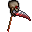

Armas de uma mão
|
Id |
Nome |
Dano |
Alcance |
Compra/Venda |
Peso |
Descrição |
 |
521 |
Adaga |
15 |
1 |
1000 GP
500 GP |
100 g |
Uma simples adaga.
+15 Dano, 1 Alcance |
 |
522 |
Faca Afiada |
10 |
1 |
100 GP
50 GP |
150 g |
Uma faca realmente afiada. Cuidado para não se ferir!
+10 Dano, 1 Alcance |
 |
530 |
Arco de curto alcançe |
50 |
4 |
3000 GP
1500 GP |
600 g |
Um arco para pequenas distâncias.
+50 Dano, 4 Alcance |
 |
536 |
Espada Curta |
100 |
1 |
8000 GP
4000 GP |
2000 g |
Uma pequena, porém afiada espada.
+100 Dano, 1 Range |
 |
545 |
Arco da Floresta |
70 |
5 |
5000 GP
2500 GP |
1200 g |
Um arco geralmente utilizado para a caça.
+70 Dano, 5 Range |
 |
548 |
Halberd |
100 |
1 |
20 GP
10 GP |
1 g |
Arma de cabo longo, muito usada por guardas.
|
 |
549 |
Machado |
100 |
1 |
20 GP
10 GP |
1 g |
Um machado.
|
 |
550 |
Machado de Ferreiro |
100 |
1 |
20 GP
10 GP |
1 g |
Um machado muito usado por ferreiros.
|
 |
561 |
Sabre |
100 |
1 |
10000 GP
5000 GP |
1 g |
Uma Espada com uma lâmina de um fio só, curvada e muito afiada.
|
 |
570 |
Adaga de Boni e Claide |
90 |
1 |
10000 GP
6000 GP |
450 g |
Adaga que matou o mafioso casal de ladrões de banco.
+90 Dano, +10 Agilidade, 1 Alcance |
 |
571 |
Setzer |
110 |
1 |
20000 GP
8000 GP |
900 g |
Uma faca afiada que leva o nome de um famoso apostador.
+110 Dano, 1 Alcance |
 |
572 |
Scimitar |
1 |
1 |
8000 GP
4000 GP |
1 g |
Uma espada com uma pesada lâmina curvada e de um só fio.
|
 |
573 |
Falchion |
1 |
1 |
8000 GP
4000 GP |
1 g |
Uma pesada espada de um fio, feita para ser usada com uma mão.
|
 |
574 |
Lança Rei Escorpião |
150 |
2 |
8000 GP
4000 GP |
200 g |
Uma lança com uma lâmina longa, muito bem trabalhada.
+150 Dano, 2 Alcance |
 |
575 |
Arco do deserto |
100 |
7 |
8000 GP
4000 GP |
1150 g |
Um arco curto, típico do lendário povo do deserto.
+100 Dano, 7 Alcance |
 |
576 |
Beheader |
1 |
1 |
8000 GP
4000 GP |
1 g |
Uma espada com uma forma bastante peculiar, designada para decapitar o inimigo.
|
 |
577 |
Dardos de osso |
1 |
1 |
8000 GP
4000 GP |
1 g |
Dardos feitos de osso.
|
 |
578 |
Cortadora de Areia |
1 |
1 |
8000 GP
4000 GP |
1 g |
Uma espada longa com ponta em forma de lua, muito usada por guerreiros noturnos do deserto.
|
 |
579 |
Rock Knife |
300 |
1 |
15000 GP
7500 GP |
3000 g |
Uma faca forjada com uma resistente pedra.
+300 Dano, 1 Alcance, Bidestra |
 |
580 |
Cajado da Vida |
1 |
1 |
8000 GP
4000 GP |
1 g |
Um cajado que aumenta o poder das magias de cura.
|
 |
581 |
Varinha Meia lua |
1 |
1 |
8000 GP
4000 GP |
1 g |
Uma varinha mágica com um formato em meia lua.
|
 |
582 |
Cajado de Fogo |
1 |
1 |
8000 GP
4000 GP |
1 g |
Um cajado que aumenta o poder de magias de fogo.
|
 |
583 |
Cajado de Gelo |
1 |
1 |
8000 GP
4000 GP |
1 g |
Um cajado que aumenta o poder de magias de gelo.
|
 |
584 |
Jackal |
1 |
1 |
8000 GP
4000 GP |
1 g |
Uma pequena e pesada espada chamada Jackal.
|
 |
623 |
Foice |
75 |
1 |
100 GP
50 GP |
1200 g |
Geralmente utilizada para a agricultura, mas também pode ser uma arma. Lenta, porém mortal.
+75 Dano, 1 Alcance |
 |
758 |
Cajado de Madeira |
5 |
1 |
50 GP
25 GP |
100 g |
Um cajado de madeira básico.
|
 |
1200 |
Arco |
20 |
5 |
1000 GP
500 GP |
20 g |
Uma arma de distância.
+15 Dano, 5 Range |
 |
1201 |
Faca |
5 |
1 |
50 GP
25 GP |
120 g |
Uma pequena faca. A arma perfeita para um iniciante.
+5 Dano, 1 Alcance |
 |
1215 |
Sabre de Brinquedo |
1 |
1 |
50 GP
25 GP |
1 g |
Um item de brinquedo, não causa muito dano.
+1 Damage, 1 Range |
|  |
3004 |
Foice da Morte  |
115 |
1 |
5000 GP
2500 GP |
1600 g |
A mesma arma empunhada pelos mensageiros do submundo.
+115 Dano, 1 Alcance |
 |
3008 |
Arco dos Reis |
110 |
6 |
10000 GP
5000 GP |
1400 g |
O arco da realeza.
+110 Dano, 6 Alcance |
 |
3029 |
Rolo de Macarrão |
30 |
1 |
50 GP
25 GP |
300 g |
Não chega a ser uma arma, mas é muito útil.
Dano +30, 1 Alcance |
 |
3030 |
Facão |
50 |
1 |
100 GP
50 GP |
400 g |
Um baita de um facão. Esta sim é uma boa arma.
Dano +50, 1 Alcance |
 |
3031 |
Cutelo Cego |
40 |
1 |
150 GP
75 GP |
500 g |
Cutelo de cortar osso. Não oferece muito risco, pois está cego.
Dano +40, 1 Alcance |
 |
3032 |
Cutelo Afiado |
65 |
1 |
150 GP
75 GP |
500 g |
Cutelo de cortar osso. Após afiado se tornou uma arma perigosa.
Dano +65, 1 Alcance |
 |
3047 |
Machadinha de Thomas Hawk |
150 |
1 |
16000 GP
8000 GP |
2000 g |
Machadinha monodestra do Cacique Thomas Hawk
+150 Dano, +5 Defesa Mágica, 1 Alcance |
 |
3051 |
Espada de Aprendizes |
40 |
1 |
4000 GP
2000 GP |
150 g |
Espada de madeira usada para treinos.
+40 Dano, 1 Alcance |
 |
3052 |
Espada Cavaleiro Lider |
65 |
1 |
7000 GP
3500 GP |
350 g |
Espada para Cavaleiros Lideres de Recrutas.
+65 Dano, 1 Alcance |
 |
3053 |
Espada Miguel Arcanjo |
175 |
1 |
200000 GP
100000 GP |
345 g |
Espada do Arcanjo Miguel.
+175 Dano, 1 Alcance |
 |
3054 |
Espada Demoniaca |
175 |
1 |
200000 GP
100000 GP |
345 g |
Espada usada por Demônios.
+175 Dano, 1 Alcance |
 |
3055 |
Espada de Kurogane |
200 |
1 |
250000 GP
125000 GP |
320 g |
Espada com lâmina negra do Guerreiro Kurogane.
+200 Dano, 1 Alcance |
 |
3056 |
Espada dos Imortais |
225 |
1 |
300000 GP
150000 GP |
360 g |
Espada usadas por Guerreiro Imortais.
+225 Dano, 1 Alcance |
 |
3057 |
Zambacutou de Pedra |
160 |
1 |
175000 GP
97500 GP |
2500 g |
Espada de pedra usada na antiguidade contra as montarias adversárias.
+160 Dano, 1 Alcance, 2 Mãos |
 |
3058 |
Zambacutou Velha |
115 |
1 |
115000 GP
57500 GP |
1200 g |
Espada Zambacutou velha de partir cavalos.
+115 Dano, 1 Alcance, 2 Mãos |
 |
3091 |
Bastão de Madeira |
50 |
1 |
6000 GP
3000 GP |
100 g |
Bastão usado por ninjas.
+50 Dano, 1 Alcance, Bidestra |
 |
3111 |
Picareta |
10 |
1 |
100 GP
50 GP |
2000 g |
Picareta comum para uso geral em escavações
Dano +10, Alcance 1 |
 |
3112 |
Picareta Profissional |
15 |
1 |
500 GP
250 GP |
2000 g |
Picareta profissional usada por Arqueologista em escavações
Dano +15, Alcance 1, Eficiência +5%, Agilidade +10 |
 |
3191 |
Rede de Captura |
10 |
1 |
1500 GP
750 GP |
100 g |
Rede para capturar borboletas e outros insetos.
+10 Dano |